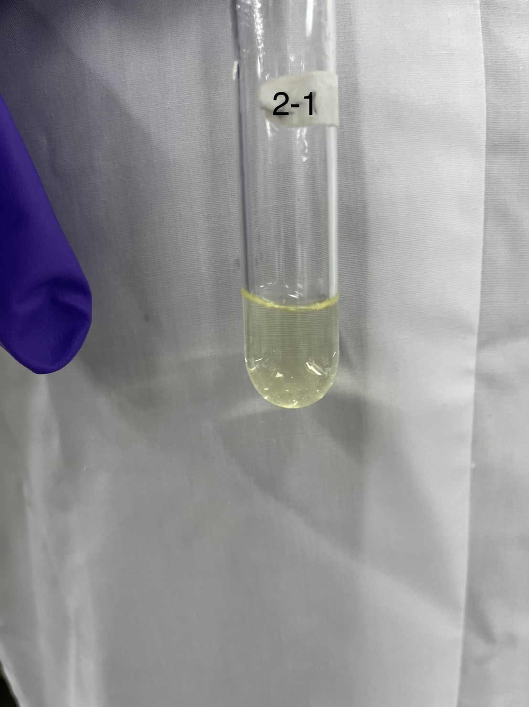
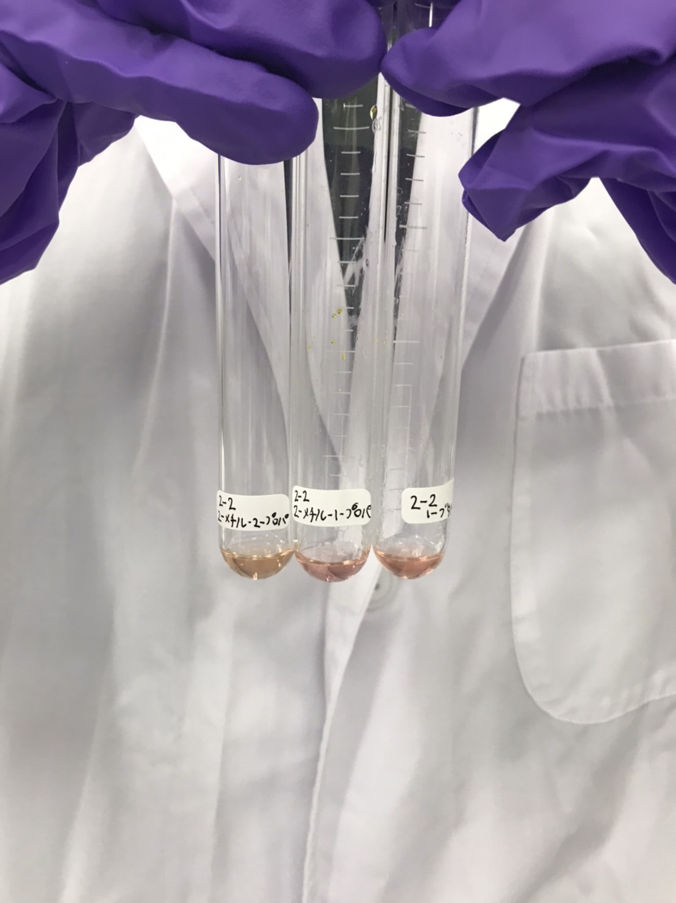
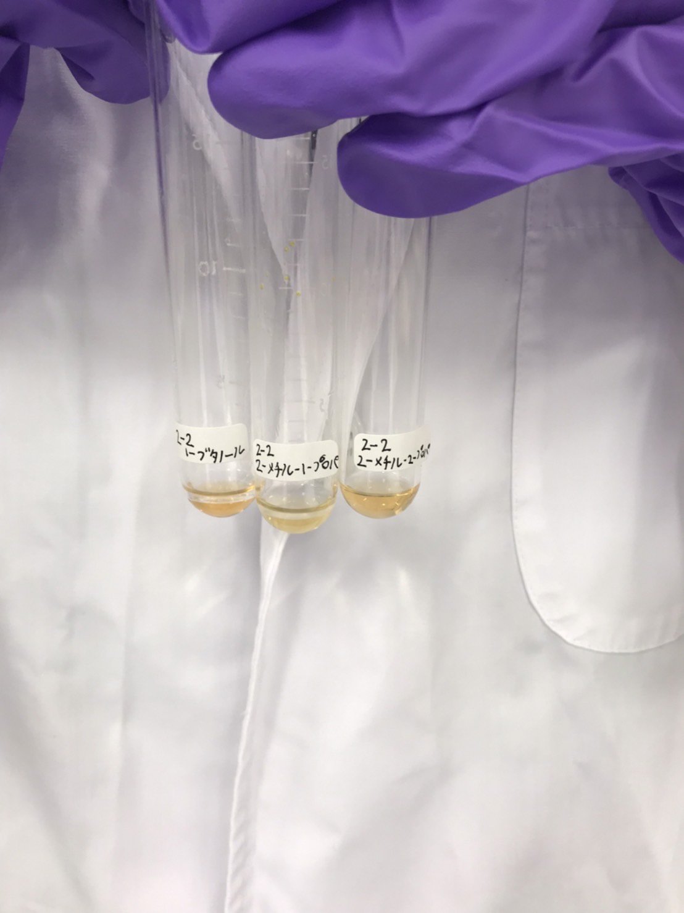

2-1
2-2アルコールの酸化

2-2 1-butanol 2-methyl-propanol 2-methyl-1-propanol
変化が見られなかったものに溶液の追加

2-2 1-butanol 2-methyl-propanol 2-methyl-1-propanol
予習
・試薬の危険性
だいたいどれも危険w。特にニトロプリシドナトリウム。
・各操作反応
①チオ尿素から硫黄が分離。黒色沈殿。
②ニトロプリシドナトリウムが錯化剤として働き、チオ尿素イオンの吸光光度変化、赤紫色呈色。
③アセチルサリチル酸生成。青～赤紫色
④エネレートアニオン生成→ニトロシル基に求核付加→オキシム生成。紫色。
⑤ホルミル基酸化→カルボン酸、還元された銀が析出→銀鏡反応。
⑥アセトン、ヨウ素、水ナト一緒に加熱で反応→ヨードホルム生成(ヨードホルム反応)。
・2-2変色
1-ブタノール(1級アルコール)は酸化されてカルボン酸→無職…
2-メチル-1-プロパノール(1級アルコール)は酸化されてカルボン酸→無職(ニート)。
2-メチル-2-プロパノール(3級アルコール)。酸化されない→薄赤色(ピンク？)。